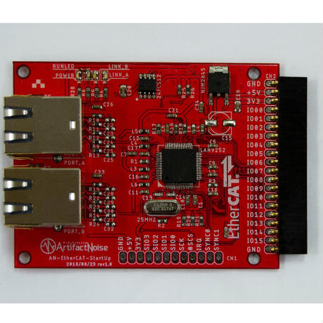

EtherCAT GPIO16ポート LAN9252使用評価ボード¶
概要¶
手取り早くEtherCATにて通信テストを行う際のもっとも単純なEtherCAT Slaveモジュールです。
マイコン不要でEtherCATの通信でGPIOx16(3.3V)を制御することが出来ます。
EtherCATの情報を記録するEEPROMもボードに搭載してあり、自由に変更も可能です。
モジュール側のセットアップ¶
- EtherCATモジュールにLEDモジュールを接続する。
- LEDモジュールはこちら EtherCATモジュール用LEDx16ボード
- LEDモジュールを使用しない場合は、ピンソケットに電源5Vを供給する。
- POWERのLEDが点灯する事を確認
PC側のセットアップ¶
EtherCATは一般のPC(Linux)に付属する有線LANを使って通信を行います。
物理的なセットアップは、
- PC(Linux)の有線LANポートにLANケーブルを接続する。
- その有線LANを直接 EtherCATのAポートに接続する。
- EtherCATのアクセスランプの点滅を確認する。
- Linux側では有線LANが接続されたが、インターネットへは未接続といったアラートが出る。（問題ない）
続いて、ソフトウェアの準備です。
- コンソールを開く
- git clone https://github.com/nonNoise/EtherCAT_Master.git
- cd ./EtherCAT_Master
- sudo python3 test.py
これでモジュールが点滅したりします。